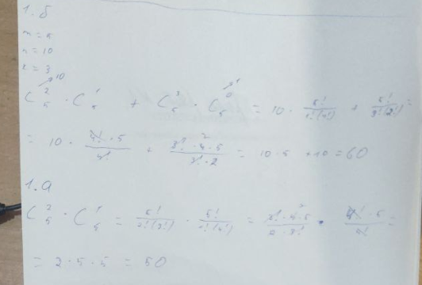
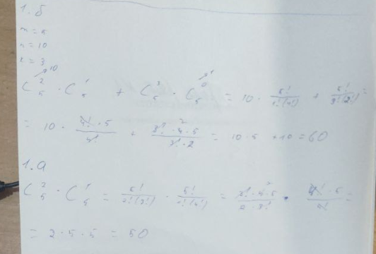

Для першого завдання бачимо, що результати власного розрахунку співпадають з програмним результатом.

Для другого завдання видно, що програма виводить саме стільки елементів вибірки, скільки було вказано.
київський національний університет ім. Тараса Шевченка
факультет інформаційних технологій
кафедра програмних систем та технологій
Дисципліна
Лабораторна робота №1
"Використання рекурсії для організації повторювальних процесів"
Варіант 15
Виконав: Мухатасов Борис Євгенович
Перевірила: Ніколаєнко Анастасія Юріївна
Cформувати декларативне мислення в галузі програмування завдяки використанню чистих функцій, рекурсій замість циклів, запобіганню даних, що змінюються. Опанувати застосування рекурсивних функцій для обчислювальних процесів.
Написати процедури, що обчислюють задану функцію за допомогою рекурсивного процесу. Продемонструвати застосування звичайної та хвостової рекурсії.
У речовій лотереї розігруються m предметів. Усього в урні n квитків. Виймається k квитків. Значення m, n, k вводять з клавіатури. Скількома способами квитки можна вийняти з урни так, щоб: а) рівно два з них були виграшними, б) принаймні два з них були виграшними?
Монотонною послідовністю називається послідовність натуральних чисел, в якій кожне натуральне число k зустрічається рівно k раз: 1, 2, 2, 3, 3, 3, 4, 4, 4, 4 ... Ввести з клавіатури натуральне число n. Використовуючи рекурсію, вивести перші n членів цієї послідовності. Контрольний тест: введено число 15, отриманий результат: 1 2 2 3 3 3 4 4 4 4 5 5 5 5 5.
Була обрана мова програмування Scheme, так як вона має легкий, зрозумілий синтаксис, який поюснюють на лекціях, практичних, а також рекомендована лектором. IDE - DrRacket. Головною перевагою для вибору данного середовища розробки є зручність та відсутність потреби у мережі інтернет
;Task1
(display "15.1\n\n")
(define m(read));кількість виграшних квитків
(define n(read));загалом в урні
(define k(read)); кількість квитків, що витягують
(define (factorial num);зовнішня ф-я знаходження факторіала
(define (fac num result); внутрішня ф-я факторіала
(if (= num 0);якщо число стає нулем то повертаємо результат
result
(fac (- num 1) (* num result))));якщо ні,то викликаємо нову ітерацію функції
(fac num 1)); виклик зовнівньої ф-ї
(define (C a b);Знаходження числа комбінацій
(define tempA (factorial a));знаходимо факторіала та заносимо їх у тимчасові змінні
(define tempB (factorial b))
(define tempAB (factorial (- b a)))
(/ tempB (* tempA tempAB));обраховуємо по формулі
)
;А)
;знаходимо кількість способів вибору 2х двох виграшний білетів з загальної кількості виграшних білеів
;знаходимо кількість способів вибору решти білетів з залишку білетів урни
; перемножуємо значення
(define result (* (C 2 m) (C (- k 2)(- n m))))
(display "\n\nA) ")
(display result)
;Б)
; Рішення полягає у знаходженні добутків числа комбінацій з
потрібного числа виграшних білетів по загальну кількість виграшних
білетів та числа комбінацій з залишковим числом невиграшних білетів по к-ть усіх виграшних білетів
;Знаходимо суму добутків
(display "\nB) ")
(define (taskB m n k)
(define (taskB_inside m n k res condition)
(if (> condition k)
res
(if (> condition m)
res
(taskB_inside m n k (+ (* (C condition m) (C (- k condition) (- n m))) res) (+ condition 1)))))
(taskB_inside m n k 0 2))
(display (taskB m n k))
;Task2
(display "\n\n15.2\n")
(define count (read))
(display "\n\n")
(define (monoOutput num times);Фукнція виводу числа "num" "times" разів
(if (> times 0)
(begin
(display num)
(display " ")
(monoOutput num (- times 1)))))
(define (out n)
(define (task2 n start_n times)
(if (< times n)
(begin
(if (<= (+ times start_n) n); condition
(monoOutput start_n start_n);if true
(monoOutput start_n (- n times))) ; if false
(task2 n (+ start_n 1) (+ times start_n)))))
(task2 n 1 0))
(out count)
Для першого завдання бачимо, що результати власного розрахунку співпадають з програмним результатом.

Для другого завдання видно, що програма виводить саме стільки елементів вибірки, скільки було вказано.